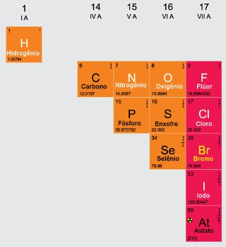

Os Não-Metais são elementos que encontram-se na sua grande maioria na parte superior direita da Tabela Periódica. O único elemento químico que não está nessa região da tabela é o Hidrogênio, que está na extremidade superior esquerda, junto com os Metais Alcalinos, mas como se comporta como um Não-Metal, é classificado como tal.
Ao contrário dos metais, que são ótimos condutores de electricidade e calor, um Não-Metal pode ser um isolador ou um semicondutor.
